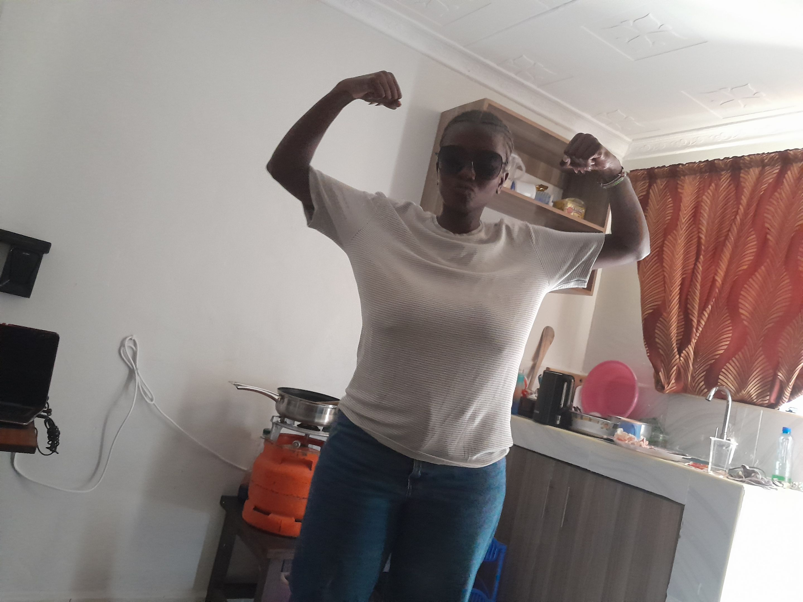
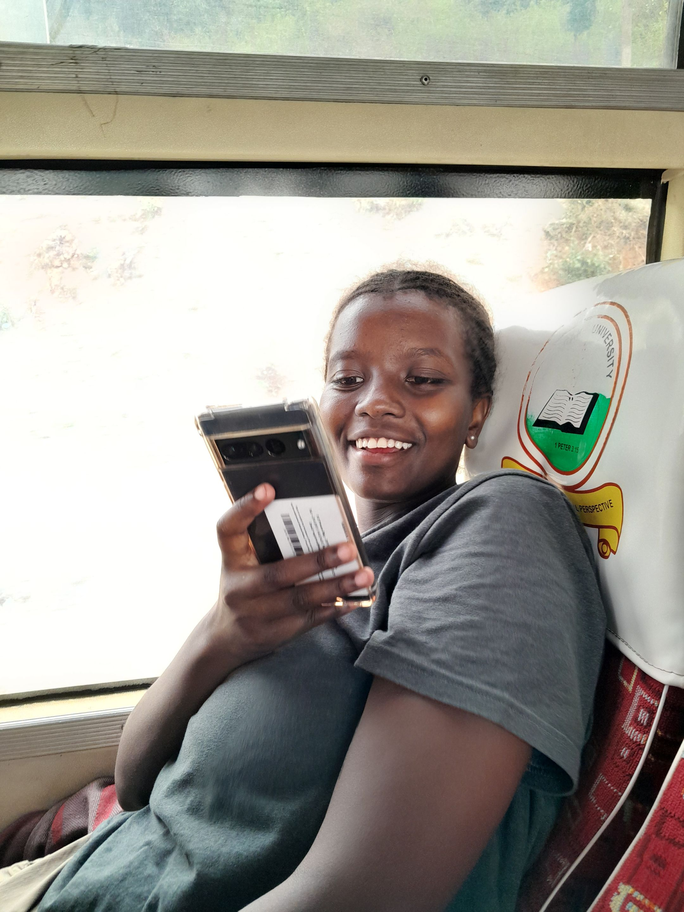
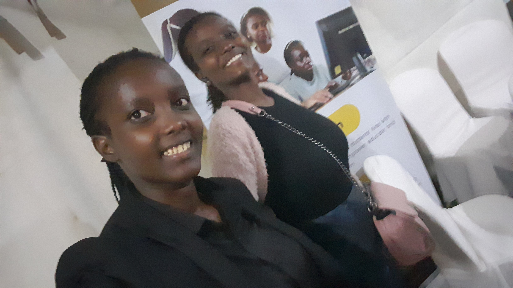
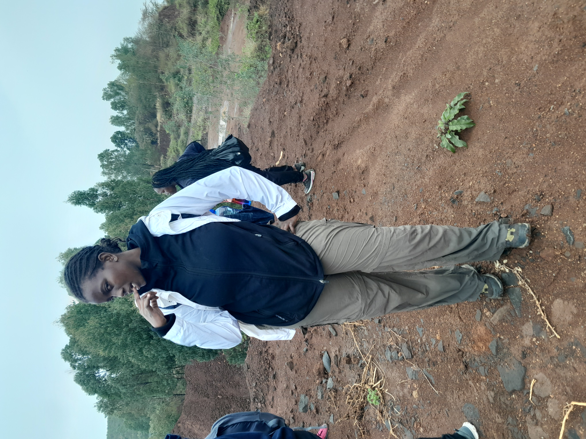

To Rhodah 🌼
A Scrapbook of Our Beautiful Moments
Before the day ends, I want to give you something created — like you once said you loved most. 💕

I knew you were strong — but damn, girl. My heart never stood a chance 💪❤️
The Moment I Knew
You were just being you, strong and confident. But in that instant, I realized I was completely, hopelessly charmed by every part of who you are.

On our way to a hike, but I was already falling deeper with every mile.
Journey Together
Sometimes the best adventures happen before you even reach your destination. Just sitting beside you made even a simple bus ride feel like a story worth telling.
You’re holding the map — but somehow, you became my whole direction 🧭💛
My Navigation System
You are checking the route with such care, but all I could think was how every step feels right when it's with you. Lost or found, I'm exactly where I want to be.

You clean up nice. Like scary nice. Like — let’s-run-away-and-get-married nice 💍😅
Effortless Grace
You have this way of making every moment feel more important just by being in it. Even formal events couldn't contain how naturally you shine.

Mid-hike, she strikes. That pose? Dangerous. That girl? Mine. 😏
Trail Runway
You've always had this way of making everything — even a hiking trail — feel full of personality. Your confidence is absolutely infectious.
The picture’s blurry — but to me, you’ve never been clearer. 💫
Perfect Imperfection
Sometimes the most beautiful moments can't be captured clearly by a camera — but they're crystal clear in the heart.
This is just the beginning... 📖
I didn't get to hold your hand today. But I'm still holding you in every way I can. This gift may be late, but my love never is.
Happy birthday, Rhodah. You're joy, fire, mystery — and the reason my days feel like more than just time. I hope this scrapbook reminds you of what you mean to me.
And this is only one scrapbook — I plan to fill a whole library. 📚💕